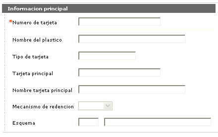
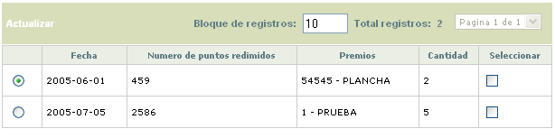
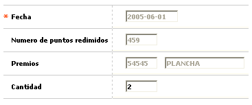
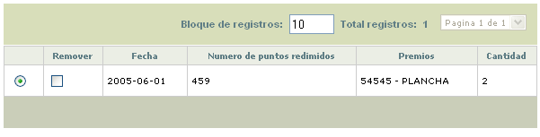

Reversión premios |
Mediante esta función es posible revertir, únicamente, los puntos utilizados mediante la redención de premios, pues a pesar de desplegarse los distintos premios y millas, el sistema no permite la reversión de estas últimas. Para reversar premios basta con seleccionar cada registro al final de los mismos y confirmar la acción (salvando los cambios); los puntos involucrados en cada reversión le son reflejados al cliente tanto en el campo Devoluciones del submenú Puntajes de la opción Datos de la tarjeta, como al momento de redimir nuevos premios pues dentro de los puntos acumulados se incluyen los aquí reversados. De igual manera el campo Saldo inventario, en Premios puntaje, se incrementa en la misma cantidad aquí reversada.
El formulario cuenta con un wizard de tres pasos a través del cual se realiza el proceso de reversión.
Filtro: En el primer paso del wizard, el usuuario debe ingresar el campo obligatorio Número de tarjeta, a través del cual el sistema traerá toda la información relacionada con el cliente.

Número y nombre de la tarjeta |
Campo en el cual se captura el número de la tarjeta a la cual se efectuará la reversión de premios. A continuación aparece el respectivo nombre del cliente. |
Tipo de tarjeta |
Campo de salida que ilustra la clase de tarjeta (Principal, Amparada o Extendida) a la que corresponde el número de tarjeta digitado. |
Tarjeta principal |
Aplica para los casos en que el tipo de tarjeta registrado pertenezca a una Amparada o Extendida, en cuyo caso despliega tanto el número como el nombre del tarjeta habiente Principal del cual depende. |
Mecanismo de redención |
En este campo se muestra a cuál mecanismo de redención, definido en Esquemas de puntaje, se encuentra relacionado el producto al que pertenece la tarjeta a la que se le tramita la reversión de premios. |
Esquema |
Campo que ilustra el esquema de puntaje dentro del cual está definido el producto al que pertenece la tarjeta a la que se le tramita la reversión de premios. |
Novedades:Conjunto de campos que permiten, de un lado, verificar cuáles premios han sido entregados al cliente y seleccionar, marcando cada registro al final del mismo, aquellos susceptibles de ser reversados. El sistema, al realizar la reversión de premios tiene en cuenta el total de los puntos que fueron redimidos por ese premio.
El usuario debe Seleccionar aquellos puntos que serán devueltos.

Fecha |
Campo de salida, presenta la fecha de proceso en la cual fue, originalmente, redimido el premio. Una vez reversado, servirá de referencia del movimiento, dado que producto de la reversión de los premios los demás campos del registro quedarán en ceros o sin datos. |
Número de puntos redimidos |
Despliega, antes de confirmar la reversión, el monto de puntos que fueron redimidos por dicho premio. |
Premios |
Contiene, antes de confirmar la reversión, la descripción del premio redimido. |
Cantidad |
Campo de salida que, antes de confirmar la reversión, muestra el número de unidades del producto, que le fueron redimidos al cliente. |

Resumen: A través de este último paso del wizard, el usuario puede finalizar el proceso de reversión de puntos, e incluso es permidito seleccionar aquellos que finalmente no requieran cumplir con este proceso. esto se realiza a través de la opción Remover.
